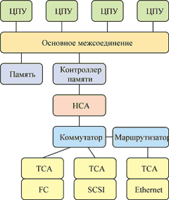
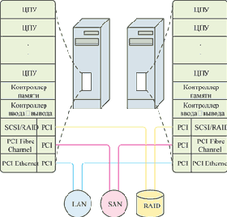
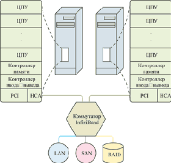

Андрей Борзенко
Одна из самых настоятельных технических потребностей практически любой современной компании - улучшение эффективности сетей и компьютерных систем. Однако зачастую прогресс здесь наталкивается на ограничения, связанные с архитектурой шины ввода-вывода. В настоящее время одним из путей устранения этого узкого места стало использование сетевых функций ввода-вывода. Специалисты по ИТ-планированию должны быть осведомлены как о важнейших достижениях в области архитектуры, так и о новых продуктах, способных повлиять на быстродействие и масштабируемость центров данных в ближайшие годы. Одним из таких достижений стала технология InfiniBand, направленная на удовлетворение повысившихся требований к системе ввода-вывода информационного центра.
InfiniBand (этот термин можно перевести как "безграничная пропускная способность") обеспечивает стандартное межсоединение, пользуясь которым предприятия могут покупать и задействовать накопители и процессорные блоки раздельно по мере развития потребностей, в том числе у различных фирм-поставщиков.
InfiniBand - последовательная, коммутируемая сетевая архитектура. Ожидается, что она преодолеет сложности и ограничения сегодняшних архитектур разделяемой памяти и разделяемой параллельной шины ввода-вывода - узкие места, обусловленные структурой межсоединений, зажатой в тиски старой технологической парадигмы. В ближайшие годы на рынке должно появиться множество новых продуктов для InfiniBand.
Основы InfiniBand
Один из методов повышения общего быстродействия систем заключается в создании системной архитектуры, освобождающей центральный процессор от участия в обработке коммуникаций и сетевого трафика. Благодаря предварительной обработке сетевых и коммуникационных задач ресурсы основных процессоров могут выделяться для сложных математических расчетов, обработки транзакций, пакетной обработки и иных вычислительных задач. На базе этой концепции, впервые представленной уже десятилетия назад, развилась мощная архитектура ввода-вывода, которая до сих используется в современных универсальных вычислительных машинах (мэйнфреймах).
Архитектура InfiniBand (рис. 1), поддержанная ведущими производителями, определяет общий стандарт для обработки операций ввода-вывода коммуникационных и сетевых подсистем и систем хранения данных. Вокруг этого стандарта сформировалась торговая ассоциация InfiniBand Trade Association (IBTA, http://www.infinibandta.org). В настоящее время в оргкомитет IBTA входят такие лидеры рынка, как Dell, Hewlett-Packard, Intel, IBM, Microsoft и Sun Microsystems, а всего в этой ассоциации более 200 членов, включая компании Adaptec, 3Com, Brocade, EMC, Fujitsu-Siemens, Hitachi, Lucent, NEC, Nortel и QLogic.
|  | Рис. 1. Архитектура InfiniBand.
|
Итак, InfiniBand - стандарт архитектуры ввода-вывода нового поколения, который использует сетевой подход к соединению серверов, систем хранения и сетевых устройств информационного центра (рис. 2, 3). Используя так называемую коммутируемую сетевую структуру, или коммутирующую решетку (switched fabric), InfiniBand переносит трафик операций ввода-вывода с процессоров сервера на периферийные устройства и иные процессоры или серверы по всему предприятию. В качестве физического канала используется специальный кабель (линк), обеспечивающий скорость передачи данных 2,5 Гбит/с в обоих направлениях (InfiniBand 1х). Для повышения скорости могут использоваться 4-кратные и 12-кратные версии InfiniBand (см. таблицу), в которых используется соответственно 16 и 48 линий, а скорости передачи данных достигают соответственно 10 Гбит/с (InfiniBand 4х) и 30 Гбит/с (InfiniBand 12х). Многоуровневая архитектура InfiniBand включает четыре аппаратных уровня и верхние уровни, реализуемые программно. В каждом физическом канале можно организовать множество виртуальных каналов, присвоив им разные приоритеты.
|  |  |
| Рис. 2. Архитектура ввода-вывода сервера.
|
Рис. 3. Архитектура сервера с InfiniBand. |
Таблица 1. Параметры различных интерфейсов
| Интерфейс | Максимальная пропускная способность, Гбит/с | Максимальное расстояние |
| InfiniBand 1x | 2,5 | 10 км |
| InfiniBand 4x | 10 | 10 км |
| InfiniBand 12x | 30 | 10 км |
| Fibre Channel | 0,8-4,2 | 10 км |
| Ultra2 SCSI | 0,6 | 12 м |
| Ultra3 SCSI | 1,2 | 12 м |
| Ultra ATA 100 | 0,8 | 1 м |
| IEEE1394a | 0,4 | 4,5 м |
| Serial ATA 1.0 | 1,5 | 1м |
| PCI 2.2 (33/66 МГц) | 1-4,2 | В пределах системной платы |
| PCI-X 1.0 (133 МГц) | 8,5 | В пределах системной платы |
| PCI-X 2.0 (DDR-QDR) | 17-34 | В пределах системной платы |
Новая технология обеспечивает более быстрый и надежный метод соединения сетевых устройств и устройств хранения с серверами и серверов между собой, обеспечивая до трех уровней избыточности. Наряду с увеличением пропускной способности InfiniBand дает еще два преимущества. Во-первых, удаление подсистем ввода-вывода из системного блока позволяет поставщикам разработать системы в стоечном исполнении с форм-фактором намного более высокой плотности. Во-вторых, такая конструкция позволяет увеличивать полосу пропускания по мере увеличения числа портов ввода-вывода, преодолевая ограничения преобладающей сегодня технологии серверных систем ввода-вывода.
На физическом уровне протокола InfiniBand определяются электрические и механические характеристики, в том числе параметры оптоволоконных и медных кабелей, разъемов, определена и возможность горячей замены. На уровне связей задаются параметры передаваемых пакетов, особенности коммутации в локальной подсети и т. п. На сетевом уровне определены правила маршрутизации пакетов между подсетями - внутри подсети этот уровень не требуется. Транспортный уровень обеспечивает сборку пакетов в сообщение, мультиплексирование каналов и транспортные службы. Архитектура InfiniBand (см. рис. 1) состоит из следующих трех основных компонентов.
Адаптер каналов главной машины
Host Channel Adapter (HCA) устанавливается внутри сервера или рабочей станции, выполняющей функции главной (хоста). Он образует интерфейс между контроллером памяти и внешним миром и служит для подключения хост-машин к сетевой инфраструктуре, построенной на основе InfiniBand. HCA реализует протокол обмена сообщениями и основной механизм прямого доступа к памяти.
Адаптер каналов целевой машины TCA
HCA подключается к одному или нескольким коммутаторам InfiniBand и может обмениваться сообщениями с одним или несколькими адаптерами каналов целевой машины (Target Channel Adapter, TCA). TCA служит для подключения к сети InfiniBand различных устройств, таких, как накопители, дисковые массивы или сетевые контроллеры. Он, в свою очередь, выступает в качестве интерфейса между коммутатором InfiniBand и контроллерами ввода-вывода периферийных устройств. Эти контроллеры могут принадлежать к разным классам, что позволяет объединять в одну систему разнородные устройства. Таким образом, TCA действует в качестве промежуточного физического слоя между трафиком данных структуры InfiniBand и более традиционными контроллерами ввода-вывода для иных подсистем, скажем, для Ethernet, SCSI и Fibre Channel. Следует заметить, что TCA может взаимодействовать с HCA и напрямую.
Коммутаторы и маршрутизаторы
Эти компоненты InfiniBand обеспечивают центральные точки стыковки, при этом к управляющему HCA может быть подключено несколько адаптеров TCA. Коммутаторы InfiniBand образуют ядро сетевой инфраструктуры. С помощью множества каналов они соединяются между собой и с TCA. При этом реализуются такие механизмы, как группировка каналов и балансировка нагрузки. Если коммутаторы функционируют в пределах одной подсети, образованной непосредственно подсоединенными устройствами, то маршрутизаторы InfiniBand объединяют эти подсети, устанавливая связь между несколькими коммутаторами.
Многие развитые логические возможности системы InfiniBand встроены в адаптеры, которые подключают узлы к системе ввода-вывода. Адаптеры освобождают хост-процессор сервера от задач транспортировки, используя канальный адаптер InfiniBand, отвечающий за организацию сообщений ввода-вывода в пакеты для доставки данных по сети. Этот механизм в корне отличается от того, что используется при коммуникациях на основе протокола TCP/IP.
Отметим некоторые ключевые особенности архитектуры InfiniBand. Во-первых, для ввода-вывода и кластеризации в принципе достаточно одной платы InfiniBand в сервере (не нужны отдельные платы для коммуникаций и систем хранения данных). Однако обычно в серверах рекомендуется использовать две такие платы, сконфигурированные для обеспечения избыточности
Во-вторых, требуется всего одно соединение с коммутатором InfiniBand на каждый сервер, IP-сеть или систему SAN. Избыточность сводится к простому дублированию соединения с другим коммутатором.
И, наконец, архитектура InfiniBand решает проблемы соединений и ограничения полосы внутри сервера и обеспечивает требуемую полосу и возможность коммуникаций для внешних систем хранения.
InfiniBand также решает проблему арбитража и конфликтов, предельно упрощает горячую замену устройств, существенно облегчает конфигурирование контроллеров (причем общая производительность не может ухудшиться из-за неправильного конфигурирования одного из них), а расстояние между периферийным контроллером и контроллером памяти может быть увеличено. На основе InfiniBand связь с удаленными модулями хранения, сетевые функции и соединения между серверами осуществляются путем подключения всех устройств через центральную, унифицированную структуру коммутаторов и каналов. Архитектура InfiniBand позволяет размещать устройства ввода-вывода на расстоянии до 17 м от сервера с помощью медного провода, до 300 м - с помощью многомодового волоконно-оптического кабеля и до 10 км - с помощью одномодового волокна.
InfiniBand и PCI
Представленная в начале 1990-х технология PCI обеспечила новый, более быстрый интерфейс ввода-вывода для ПК (см. таблицу). Сегодня этот стандарт получил широкое распространение, что привело к более высокой стабильности, простоте реализации и лучшему ассортименту продуктов. Характеристики стандарта PCI обещали ему долгую жизнь, однако за десять лет изменилось очень многое. Сегодня PCI используется как спецификация соединения на системной плате системных компонентов (графических контроллеров, Ethernet и накопителей), а также как стандарт шины ввода-вывода с полосой пропускания 133 Мбайт/с - для построения FC- и SCSI-адаптеров систем хранения, сетевых адаптеров Ethernet и Gigabit Ethernet, а также графических контроллеров (сейчас здесь наблюдается переход от PCI к шине AGP).
В середине 1990-х стало очевидно, что возможностей шины PCI недостаточно для удовлетворения потребностей крупных информационных центров в производительности, готовности и управляемости. Эта проблема обострилась с бумом Интернета, начавшимся в 1999 году и приведшим к беспрецедентному росту трафика и повышению требований к удаленным системам хранения данных и кластеризации серверов. Стандарты PCI-X и PCI-X 2.0, предлагающие частичные улучшения, также не удовлетворяют долговременных потребностей информационных центров. Вскоре была предложена еще одна последовательная архитектура, PCI Express (изначально называвшаяся 3GIO), поддержанная консорциумом PCI-SIG и призванная заменить PCI начиная с 2004 г.
Учитывая дальнейший рост производительности микропроцессоров, а также недостатки и ограничения "общей шины", осенью 1998 г. корпорация Intel (http://www.intel.com) обнародовала принципиально иную архитектуру, ориентированную на следующее поколение подсистем ввода-вывода, - Next Generation I/O (NGI/O). Примерно в то же время по инициативе корпорации IBM (http://www.ibm.com) был создан альянс компаний для разработки открытого стандарта архитектуры под названием Future I/O. В отличие от NGI/O в спецификации Future I/O допускалось использование PCI-адаптеров. Тем не менее компромисс между двумя группами компаний вскоре был все-таки найден.
Архитектура InfiniBand должна решить проблему неадекватности полосы пропускания системы ввода-вывода при использовании стандарта PCI. Однако InfiniBand не предназначена для замещения PCI в качестве соединительной шины для компонентов уровня системной платы. Наоборот, InfiniBand будет сосуществовать с PCI, расширяя возможности ввода-вывода и производительность сервера, - сначала адаптеры HCA будут устанавливаться в имеющиеся гнезда PCI, и лишь затем произойдет постепенный переход к собственно InfiniBand-реализациям. Ожидается, что не позднее начала 2004 г. изготовители серверов начнут поставлять системы с адаптерами InfiniBand HCA, реализованными в микросхемах на системной плате. При этом InfiniBand обеспечит улучшенную масштабируемость и высокую готовность при соединении систем хранения с серверами. Эта технология также очень хороша для объединения компьютеров в кластеры, которые могут разделять между собой нагрузки и продолжать работать даже при отказе отдельных машин.
Конструктивная особенность PCI не допускает физического удаления шины ввода-вывода от контроллера памяти, поэтому эта шина всегда остается в границах шасси сервера. Вместе с тем благодаря архитектуре InfiniBand изготовителям серверов удалось "развязать" комплекс обработки и устройства ввода-вывода, что, помимо прочего, позволяет повысить плотность серверных систем, в которых адаптеры ввода-вывода удалены с шасси. Крупные производители серверов рассчитывают с помощью архитектуры InfiniBand сделать сегодняшние модульные (blade) серверы еще тоньше путем распределения компонентов компьютера по различным секциям в корпусе стоечного типа.
Инфраструктуры ввода-вывода
В современной инфраструктуре ввода-вывода используется нескольких ключевых протоколов. Их можно разделить на две основные целевые категории - сетевые и протоколы хранения данных. Протоколы первого типа позволяют организовать взаимодействие между компьютерами и отвечают за перемещение данных между ними. Протоколы хранения данных отвечают за взаимодействие сервера с системой хранения данных. Основной в этой категории протокол - SCSI. Применение Fibre Channel, дорогостоящего в сравнении со SCSI, до настоящего времени ограничивалось крупными корпоративными информационными центрами.
Традиционная инфраструктура ввода-вывода в информационном центре предполагает, что каждому устройству требуется отдельный PCI-контроллер ввода-вывода и отдельный кабель, соединяющий это устройство с контроллером. Сетевой протокол IP (Internet Protocol), определяющий способ, которым взаимодействуют сетевые слои двух хостов, служит общей связующей нитью всего Интернета. Хосты могут находиться как в одной сети, так и в разных сетях. При пересылке или получении данных электронной почты, Web и т. п. сообщение разбивается на небольшие фрагменты, называемые пакетами. Каждый из пакетов может быть отправлен по разным маршрутам, и порядок его прибытия непредсказуем. IP-протокол просто доставляет пакеты, а восстановление правильного их порядка - задача уже другого протокола, протокола управления передачей (Transmission Control Protocol, TCP). Протокол TCP/IP играет важнейшую роль в сегодняшней инфраструктуре ИТ-коммуникаций в локальных и глобальных сетях.
ПО, которое поддерживает IP поверх InfiniBand, позволяет устанавливать стандартные TCP/IP-соединения в структуре InfiniBand, сохраняя капиталовложения в существующие центры данных, в частности потому, что существующие приложения, использующие TCP/IP, могут работать поверх InfiniBand без каких-либо модификаций. InfiniBand использует IP как протокол сетевого уровня для WAN-соединений, и это обеспечивает прозрачные соединения через существующие IP-инфраструктуры.
Потенциальное преимущество архитектуры InfiniBand - уменьшение участия процессора сервера в обработке трафика TCP/IP. Сегодня процессор задействован во всех транзакциях TCP/IP, на что затрачивается значительное число тактов его работы. В рамках концепции InfiniBand маршрутизаторы и другие коммутирующие устройства самостоятельно обрабатывают трафик TCP/IP. В пределах системы InfiniBand соответствующий протокол позволяет сочетать малую латентность с пониженными требованиями к ресурсам процессора. Эти свойства делают InfiniBand привлекательной альтернативой Gigabit Ethernet в приложениях сервер-кластер и межпроцессорных коммуникационных приложениях.
В настоящее время в информационных центрах широко применяется множество сетевых топологий систем хранения данных и различных протоколов. Рассмотрим их подробнее.
SCSI
Стандарт SCSI появился 20 лет назад, впервые обеспечив физическое разделение устройств хранения и основного компьютера. Со времени появления SCSI этот стандарт несколько раз пересматривался, повышалась скорость шины, увеличивалась длина соединения между хост-компьютером и подключаемыми устройствами хранения, число которых при этом росло. Однако свойства параллельного интерфейса SCSI накладывают те же ограничения, что и в особенности современной архитектуры устройств ввода-вывода на основе шин и каналов.
SAN и Fibre Channel
Сети хранения SAN на основе Fibre Channel обеспечивают высокую скорость на физическом уровне и малую латентность механизма установления связи. Технологии SAN, оптимизированные для устройств хранения данных, имеют существенное преимущество перед параллельным интерфейсом SCSI. Технология Fibre Channel стала первой попыткой ИТ-отрасли преодолеть ограничения масштабируемости, производительности и расстояния до устройства, обусловленные стандартом SCSI. Fibre Channel представляет собой протокол ввода-вывода сетевых систем хранения, который обеспечивает более высокие уровни производительности с высокой надежностью и низкой латентностью.
NAS
Под NAS обычно понимают устройства хранения данных, подключаемые к сети. Они могут быть связаны с существующими файловыми серверами при помощи Ethernet, управление при этом осуществляется посредством запросов на основе протокола IP. В устройствах, называемых NAS appliance (NAS-приставками), для оптимизации доступа к данным используется тщательно настроенное аппаратное и программное обеспечение. Использование NAS-приставок считается наиболее эффективным и рентабельным способом совместного использования файлов.
Как упоминалось ранее, сегодня для доступа к разнообразным платформам хранения данных используется отдельный интерфейс на каждый сервер. Такая структура характеризуется высокой стоимостью, недостаточной масштабируемостью и сбалансированностью. Она создает сложности, связанные с аппаратным и программным обеспечением, для ее развертывания и поддержки приходится привлекать опытные кадры.
По мнению экспертов из компании Aberdeen Group (http://www.aberdeen.com), топология структуры ("фабрика"), на которой строится InfiniBand, стала предпочтительной архитектурой для сетевых систем хранения. В "фабрике" для объединения различных топологий в единую сеть, которая теоретически может состоять из миллионов устройств, используется конфигурация на основе коммутаторов. Это позволяет создавать высокопроизводительные системы, состоящие из фактически неограниченного числа каналов ввода-вывода, причем все эти каналы способны использовать полную пропускную способность, обеспечиваемую данным типом связи.
По мере появления новых протоколов для сетевых систем хранения все более актуальной становится потребность в технологии маршрутизации, поддерживающей обмен данными между несопоставимыми протоколами ввода-вывода. На простейшем уровне это могут быть продукты архитектуры InfiniBand, которые действуют как мосты между параллельным SCSI-интерфейсом, Fibre Channel, а впоследствии и новыми устройствами на основе InfiniBand. В идеологию InfiniBand заложена совместимость с современной структурой классов устройств ввода-вывода наряду с возможностью поддержки новых расширенных протоколов сетевых систем хранения.
Большинство сегодняшних систем для взаимодействия серверов с системами хранения используют параллельный протокол SCSI. Подключение этих устройств к сетевой архитектуре InfiniBand подразумевает наличие коммутатора или маршрутизатора для преобразования трафика SCSI или Fibre Channel в сетевой протокол. Предприятия могут начать переход к архитектуре InfiniBand с минимальными сложностями, защитив вложения в существующее оборудование и одновременно готовя свои информационные центры к новым, сетевым системам хранения данных.
Масштабирование и консолидация
InfiniBand может поддерживать масштабирование серверов в недоступном ранее диапазоне. Такие перспективные серверные технологии, как кластеры и модульные серверы, безусловно окажутся более привлекательными при использовании технологии InfiniBand даже на уровне самого сервера.
Высокопроизводительные кластеры и кластеры высокой готовности применяются уже два десятилетия. Первые распределяют рабочую нагрузку по нескольким серверам в условиях ограниченной полосы пропускания для обмена сообщениями между процессорами. InfiniBand обеспечит значительное расширение полосы пропускания и уменьшение латентности при прохождении сообщений, в результате чего стоимость ориентированных на быстродействие кластеров будет ниже, а пропускная способность значительно повысится.
Кластеры высокой готовности позволяют восстанавливать информацию после аппаратного или программного сбоя. Состояние обработки для нескольких серверов сохраняется на резервном сервере, который может выполнять полезную работу до того момента, когда он вызывается для восстановления. Поскольку с сервера на сервер должны перемещаться очень большие объемы информации о состоянии приложения, широкая полоса пропускания и низкая латентность архитектуры InfiniBand в значительной степени понизят требования к запасу производительности кластера - в результате на предприятиях приложения все чаще смогут выполняться в круглосуточном режиме высокой готовности.
Размеры современных микропроцессоров и плотный дизайн компонентов позволяют разместить модульный сервер в конструктиве размером с обычную книгу, но корпус, в который устанавливаются модульные серверы, может вместить лишь пару накопителей, поэтому коммуникации и кабели ввода-вывода создают серьезную проблему при конфигурировании десятков модулей в объединительном стоечном корпусе. Более того, если эти модульные серверы должны взаимодействовать друг с другом в рамках кластерной архитектуры, полоса пропускания для коммуникаций между серверами и время латентности становятся основными ограничивающими факторами.
Использование коммутатора InfiniBand разрешает проблему полосы и латентности, устраняя при этом и путаницу кабелей. Каждый процессорный модуль имеет один или несколько разъемов HCA, соединяемых с избыточным коммутатором InfiniBand, расположенным в пределах шасси. Тем самым каждый модуль требует только одного соединения с InfiniBand и одного кабеля питания. Это делает возможным и рентабельным создание серверных шасси очень высокой плотности. При использовании структуры InfiniBand модульные серверы легко специализировать под конкретную задачу, например, связанную с вычислениями, вводом-выводом или обработкой протоколов коммуникаций.
Развертывание InfiniBand в информационном центре
По мере появления новых стандартов на межсоединения ввода-вывода для информационных центров системы на основе InfiniBand и PCI какое-то время будут соседствовать. Архитектура InfiniBand может внедряться в информационных центрах поэтапно, что позволяет минимизировать нарушения, вносимые процессом модернизации в среду. Исследования на предприятиях, начавших внедрение InfiniBand, показывают, что снижение совокупной стоимости владения для кластеров базы данных благодаря этой технологии составило порядка 50%, а снижение затрат на управление достигло 70%. Кроме того, уменьшается число общих точек сбоя, отказов оборудования, упрощается конфигурирование полностью резервированных систем, их обслуживание и поддержка, а также замена компонентов. Применение InfiniBand обеспечивает почти линейную масштабируемость обработки транзакций, СУБД и некоторых технических приложений. Так, по данным IBM, база данных DB2 допускает почти линейное масштабирование до 999 узлов при разбиении приложения ERP для mySAP.com. Возможность создавать серверные фермы с высокой плотностью размещения оборудования для ресурсоемких приложений нужна множеству коммерческих, учебных и государственных организаций. Тесты компании Agilent Technologies (http://www.agilent.com) показывают линейную масштабируемость латентности при увеличении размера пакетов с коммутаторами InfiniBand, а масштабируемая пропускная способность составляет от 70 до 80% от теоретической емкости. Задержка в коммутаторе составляет порядка 300 нс, что делает коммутаторы InfiniBand очень эффективными для построения сети в масштабе информационного центра.
Передача обработки протокола TCP/IP маршрутизаторам InfiniBand освободит ресурсы сервера баз данных - эффективность работы приложений при этом повышается без необходимости платить за обновление ПО. Компания Lane15 (http://www.lane15.com) продемонстрировала скорость передачи данных между серверами в 150 Мбайт/с на уровне приложения при всего лишь 2%-ной нагрузке на процессор. Компания Auspex (http://www.auspex.com) показала пропускную способность в 90 Мбайт/с через шину PCI при загрузке процессора всего 18%.
По данным Aberdeen Group, первые 100 тыс. долл., потраченных на технологию InfiniBand, могут окупиться менее чем за шесть месяцев благодаря более высокой степени использования сервера и сети. Для большинства крупных информационных центров прямые затраты на оборудование InfiniBand в течение первых двух лет пятилетнего плана не превысят 500 тыс. долл., а стоимость самого оборудования будет амортизирована в последующие годы.
Преимущества архитектуры InfiniBand
|
Таким образом, миграция на платформу InfiniBand становится все более привлекательной. Она облегчает замену старой архитектуры ввода-вывода на альтернативную масштабируемую структуру следующего поколения. Однако эта миграция не произойдет мгновенно. Потребуется тщательное планирование, а поэтапный переход может начаться в 2003 г.
Архитектура InfiniBand, получившая широкую поддержку в компьютерной индустрии в качестве открытого стандарта, хорошо позиционируется и имеет все шансы стать предпочтительной транспортной системой для сетей серверов, использующих межпроцессорные коммуникации и кластеры. InfiniBand предусматривает широкий набор топологий соединений, ориентированный на масштабирование систем ввода-вывода по мере роста потребностей. Однако этот транспортный механизм пока нов, и первые внедрения будут иметь место в крупных корпоративных и исследовательских информационных центрах, где выше всего потребность в расширении полосы пропускания подсистемы ввода-вывода.
Очень важно, что архитектура InfiniBand позволяет экономично осуществлять поэтапное наращивание емкости и производительности. Руководителям ИТ-подразделений следует присматриваться к первым образцам программного и аппаратного обеспечения InfiniBand, чтобы в дальнейшем извлечь максимум выгоды от использования новой технологии.